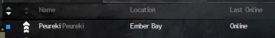
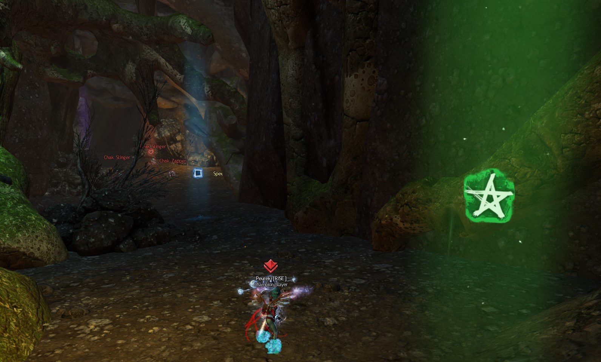
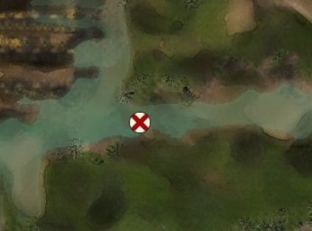

Commanding
Disclaimer:
This guide is not how all commanders should lead, but simply suggestions and great infomation for people who are getting into commanding or leading in the general open world. Situations are always going to be different such as all LFG PUG squad, full guildies, half guildies half pugs, HoT maps vs LS4 maps, etc. Depending on the situation will influence leading that train.
Getting started:
The wiki has great information on what you need to know about the commander tag in terms of abilities, limits, and utilities.
Utilizing this website
Pick a map from the timer page that matches a farm you'd like to do. These pages offer event respawn timers from nearly all the events from that particular map. When farming, it's great to know the cooldown and to see when the event will be up. This is handy for farms such as Tangled Depths or Dragonfall where repeatable events are a given. This can allow for maximum effenciency because you can plan when to head to that event and be there around when it spawns. Priority of events are labeled from finished guides under maps.
General rule of thumb
Always communicate with your squad in what your plans are. If you're going to be waypointing a lot, let them know. Always make sure to link where you're heading to. If you're planning to split up, make sure to announce when and where. As for a map wide meta, it doesn't hurt to also communicate with outside squad chat.
As for pacing, make sure you're not running too ahead of the group (unless you know your group well). PUGS generally have a slower reaction time so waiting a few seconds before doing an event can help.
Tips

Before every train, I always setup the squad a few minutes early. I place myself on LFG with a few-word description of the farm and mark myself /lfg in the chatbox. By doing /lfg, you're name will be displayed blue on your friend's and guild list. This is a good indication to show that you are doing a train. With that, it's good to write a quick squad message so that when people join your squad, that's the first message they see. This can be directions, guides, waypoints, links, etc.

Markers are a great tool for more than showcasing a certain area. For moving quick, I like to put markers in the direction that I'm running towards. For maps such as Tangled Depths or Verdant Brink where the maps are famous for being confusing, it's a great way for people to catch up if they get lost.

Just like markers, squad orders are a great thing to utilize for long distance. An example would be a bounty train. For a mostly PUG filled squad, using orders can be useful for the commander to pick up a bounty and mark the location of the bounty. All squad members will be able to see it and they would not have to follow you to pick up the bounty ever time.

 Patreon
Patreon  Paypal
Paypal